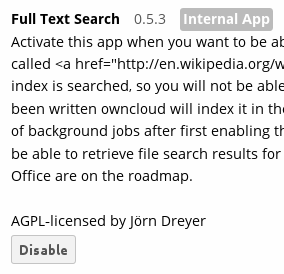
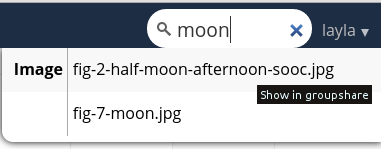

Enabling Full-Text Search¶
The Full-Text Search app indexes plain text, .docx, .xlsx, .pptx,
.odt, .ods and .pdf files stored in ownCloud. It is based on Zend
Search Lucene, which is a good general purpose text
search engine written in PHP 5. The Zend Lucene index is stored on the
filesystem (in owncloud/data/$user/lucene_index) and does not require a database server.
Using the Full-Text Search app is literally set-it-and-forget-it: all you do is enable it on your Apps page, and then it automatically indexes all documents on your ownCloud server. It does not index files on remote storage services or devices.

When you want to find a document, enter your search term in the search field at the upper right of your ownCloud Web interface. You can run a search from any ownCloud page. Hover your cursor over any of your search results to see what folder it is in, or click on the filename and it takes you to the folder.

Known limitations
It does not work with the Encryption app, because the background indexing process does not have access to the key needed to decrypt files when the user is not logged in.
Not all PDF versions can be indexed because its text extraction may be incompatible with newer PDF versions.